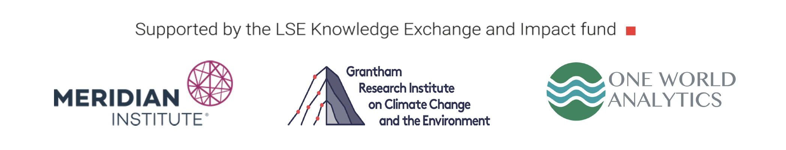

Presentations from Day Two
Block One - Recording
Data Valuation, Trust and the Sovereign Commons License
Paul Oldham (begins: 00:20)
Paul Oldham from One World Analytics pointed to the inclusion of the OECD Recommendation on Enhancing Access to and Sharing of Data and the UNESCO Recommendation on Open Science in Decision 15/9 and argued that the nature of these documents is sometimes misunderstood. He used the example of the privatisation of Alphafold 3, originally based on openly available data from EMBL-EBI, to raise questions on ensuring fair returns for biodiversity. He pointed to the importance of maintaining relationships between different kinds of data to maintain transparency in how it is being used and put forward the suggestion of a Sovereign Commons Licence, whereby Parties, in the collective exercise of their sovereign rights could decide to establish a common licence for the sharing of digital sequence information.
A further elaboration on the concept of the Sovereign Commons License from Paul Oldham and Siva Thambisetty is available here.
Slides
Patent Data and DSI Users
Paul Oldham (begins: 18:57)
Paul Oldham demonstrated the importance of patent analytics for understanding trends in science and technology, identifying users of DSI and linking these users to sector classification codes like ISIC codes. He made the point that universities are frequent patent applicants.
Slides
MGR and DSI on MGR in the BBNJ Treaty
Siva Thambisetty (begins: 27:36)
Siva Thambisetty from the LSE reflected on the implications and lessons learned from the BBNJ Treaty for DSI in the context of the CBD. She highlighted the obligations related to Party reporting under the legally binding Treaty, emphasizing the requirement to report the origin of genetic material from which the DSI is sourced, using a Batch Identifier. Additionally, she discussed the obligation for databases holding data within the scope of the BBNJ to report on that data at an aggregate-level every two years. She concluded that the direction of travel is towards the use of identifiers and the mapping of aggregate data flows, and that this shift is necessary to foster trust. She further emphasized that databases should play a key role in the architecture of trust.
Slides
The Perspective from the Plant Treaty
Alvaro Toledo (begins: 41:00)
Alvaro Toledo from the Plant Treaty Secretariat discussed the subscription model under the Plant Treaty, their use of SMTAs, and the importance of data collection to understand the industry landscape.
(No links available)
Block Two - Recording
GBIF’s Approach to Open Access to Data within a Framework of Trust and Transparency
Tim Hirsch (begins: 00:45)
Tim Hirsch provided an overview of the Global Biodiversity Information Facility as an organization, illustrating how its data is used globally. He explained GBIF’s use of Creative Commons licenses for their data and highlighted their user agreement, which clarifies that while GBIF data is free of cost to users, it is not free of responsibilities. He also discussed GBIF’s practice of assigning DOIs to datasets, and to each requested download, which enhances transparency in data usage and enables monitoring of the impact of GBIF data in research and policymaking, while ensuring proper recognition for data providers.
Slides GBIF Terms of Use Citation Guidelines
The INSDC: 40 Years of Trust
Masanori Arita (begins: 14:29)
Masanori Arita from the DDBJ addressed common questions regarding the INSDC collaboration, including their use of metadata and their efforts to integrate the FAIR and CARE (without the A) principles. He also expressed concerns about DDBJ’s capacity to work with commercial cloud services and the feasibility of the INSDC registering users or charging for access to the database.
Slides
The Global Biodata Infrastructure
Chuck Cook (begins: 26:01)
Chuck Cook from the Global Biodata Coalition emphasized that sequence data gains value through comparison with other sequences and as it moves through the biodata resource infrastructure. This infrastructure is an interdependent network of databases and repositories holding various types of biodiversity data, extending beyond genetic sequences to include structures, compounds, interactions, and pathways. He also highlighted the insufficiency of funding to support the current infrastructure and stressed the importance of the free flow of information for the advancement of global science.
Slides
The LSE Roundtable on Global Biodiversity Finance and Digital Sequence Information was organised by the Ocean Biodiversity Collective and One World Analytics and facilitated by the Meridian Institute the Grantham Research Institute.
